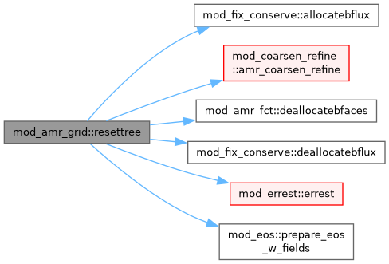
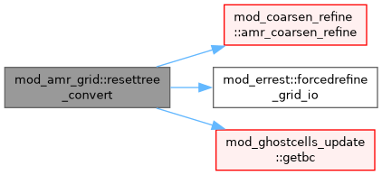
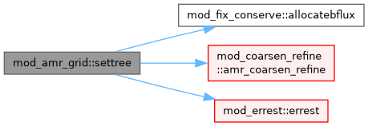

mod_amr_grid Module Reference
Functions/Subroutines | |
| subroutine, public | settree |
| Build up AMR. | |
| subroutine, public | resettree |
| reset AMR and (de)allocate boundary flux storage at level changes | |
| subroutine, public | resettree_convert |
| Force the tree to desired level(s) from level_io(_min/_max) used for conversion to vtk output. | |
Function/Subroutine Documentation
◆ resettree()
| subroutine, public mod_amr_grid::resettree |
reset AMR and (de)allocate boundary flux storage at level changes
Definition at line 46 of file mod_amr_grid.t.
Here is the call graph for this function:

◆ resettree_convert()
| subroutine, public mod_amr_grid::resettree_convert |
Force the tree to desired level(s) from level_io(_min/_max) used for conversion to vtk output.
Definition at line 83 of file mod_amr_grid.t.
Here is the call graph for this function:

◆ settree()
| subroutine, public mod_amr_grid::settree |
Build up AMR.
Definition at line 13 of file mod_amr_grid.t.
Here is the call graph for this function:

Generated by